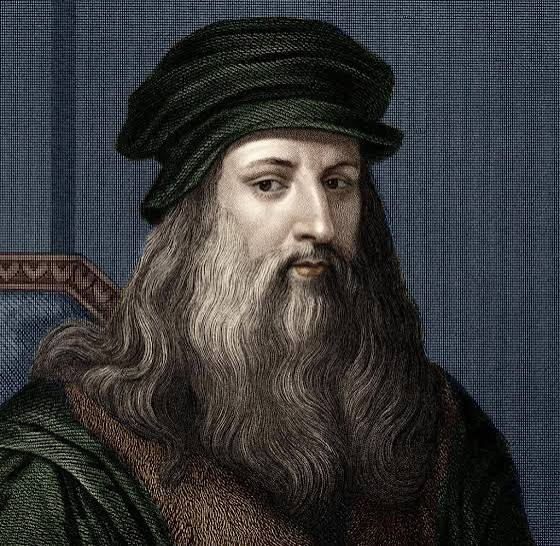
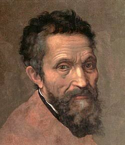
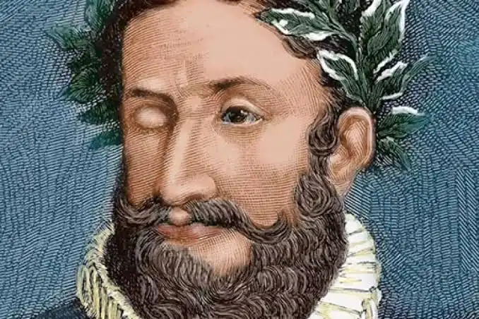
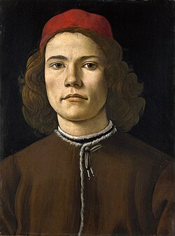

Leonardo da Vinci
Pintor, inventor e cientista. Autor da Mona Lisa e do Homem Vitruviano.

Pintor, inventor e cientista. Autor da Mona Lisa e do Homem Vitruviano.

Escultor e pintor responsável pela obra Davi e pela Capela Sistina.

Principal representante do Classicismo português e autor de Os Lusíadas.

Autor de O Nascimento de Vênus, uma das obras mais famosas do período.
O Renascimento foi um movimento cultural, artístico e científico que surgiu na Europa entre os séculos XIV e XVI. Inspirado nos valores da Antiguidade Clássica, promoveu a valorização da razão, do conhecimento e da capacidade humana.
Na literatura portuguesa, o Renascimento influenciou diretamente o Classicismo, tendo Luís de Camões como seu maior representante.